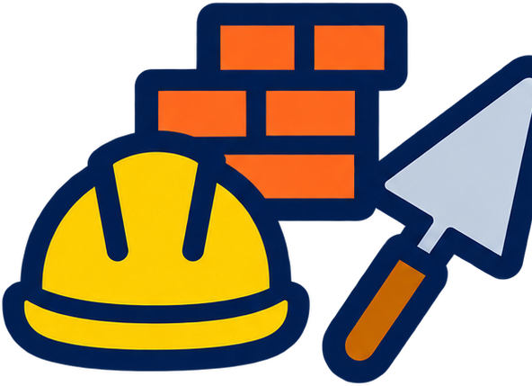

Matemática ciclo superior
4 h semanales · 144 h anuales
Números reales y complejos, sucesiones, funciones y análisis gráfico y analítico.

Formación para proyectar, dirigir, ejecutar, gestionar y mantener obras edilicias e instalaciones, con una mirada integral del proceso constructivo: desde el programa de necesidades del comitente hasta el mantenimiento de lo construido.
El título de referencia es Maestro Mayor de Obras, dentro del sector de Construcciones Edilicias y la familia profesional de Construcciones. Está capacitado para analizar las necesidades de un cliente y elaborar el programa de necesidades, desarrollar anteproyectos y proyectos de soluciones espaciales, constructivas y técnicas, dirigir y gestionar la ejecución de procesos constructivos, prestar servicios de evaluación técnica a terceros y asesorar técnicamente.
Su trabajo es interdisciplinario: se vincula con especialistas en equipamiento e instalaciones electromecánicas, otras especialidades de la construcción, mecánica, informática y otras áreas. Responde ante sus contratantes por el cumplimiento de las normas específicas, de seguridad e higiene y por la calidad de los productos y servicios que presta.
El plan combina materias científico-tecnológicas (Matemática, Física, Química) con formación específica en construcciones: materiales, dibujo y representación gráfica, sistemas constructivos, estructuras, instalaciones, documentación de obra, normativa y gerenciamiento. Se cursa de 4.º a 7.º año y culmina con las Prácticas Profesionalizantes del Sector Construcciones (216 horas anuales).
4 h semanales · 144 h anuales
Números reales y complejos, sucesiones, funciones y análisis gráfico y analítico.
3 h semanales · 108 h anuales
Energía mecánica y térmica: cinemática, dinámica, calor, temperatura y calorimetría.
2 h semanales · 72 h anuales
Estructura atómica, tabla periódica, uniones químicas, estequiometría y soluciones.
2 h semanales · 72 h anuales
Materiales pétreos, cerámicos, aglomerantes, hidrófugos y metales: propiedades y usos.
3 h semanales · 108 h anuales
Normas y simbología de representación, escalas, acotación y dibujo asistido por computadora.
3 h semanales · 108 h anuales
Plantas, cortes, vistas y volumen; sistemas de acotación y escalas de representación.
4 h semanales · 144 h anuales
Suelos, fundaciones, muros de contención, nivelación y replanteo.
2 h semanales · 72 h anuales
Relevamiento de construcciones existentes, demoliciones, apuntalamientos y submuraciones.
2 h semanales · 72 h anuales
Conceptos de arquitectura y urbanismo, programa de necesidades, circulación y anteproyecto.
4 h semanales · 144 h anuales
Límites, continuidad, derivadas, integrales y modelización de fenómenos.
3 h semanales · 108 h anuales
Electrostática, electrodinámica, magnitudes eléctricas y corriente eléctrica.
5 h semanales · 180 h anuales
Fuerzas, equilibrio, momentos, tipos de carga y acción del viento sobre estructuras.
4 h semanales · 144 h anuales
Planos municipales, generales, de detalles y de replanteo; normas de edificación y planeamiento.
2 h semanales · 72 h anuales
Humedades, causas y efectos, y mantenimiento predictivo, preventivo y correctivo.
3 h semanales · 108 h anuales
Entrepisos, dinteles, cubiertas, cielorrasos, revoques, revestimientos y aberturas.
4 h semanales · 144 h anuales
Proyecto de una vivienda de dos plantas aplicando FOS, FOT y densidad.
2 h semanales · 72 h anuales
Funciones vectoriales, límites y derivadas parciales, transformadas y probabilidad.
3 h semanales · 108 h anuales
Desagües cloacales y pluviales, sistemas de ventilación y redes de gas.
6 h semanales · 216 h anuales
Hormigón armado: resistencia, ensayos, aceros y diagramas de tensión y deformación.
2 h semanales · 72 h anuales
Contrato de trabajo, sueldo mínimo, remuneraciones, aportes y ART.
6 h semanales · 216 h anuales
Proyecto de instalaciones, legajo técnico y planos sanitarios, de gas y eléctricos.
2 h semanales · 72 h anuales
Control de procesos constructivos de instalaciones, calidad de materiales y registro de avances.
2 h semanales · 72 h anuales
Topografía: topometría, altimetría, planimetría y medición de ángulos.
4 h semanales · 144 h anuales
Programa de necesidades, normativa, evaluación de rentabilidad y flujo de fondos.
2 h semanales · 72 h anuales
Teorías del emprendedorismo, finanzas, marketing y planificación de emprendimientos.
4 h semanales · 144 h anuales
Cálculo de estructuras metálicas y de madera según el sistema constructivo adoptado.
4 h semanales · 144 h anuales
Termodinámica, transferencia de calor, climatización y acondicionamiento del aire.
7 h semanales · 252 h anuales
Proyecto de arquitectura integral con aspectos normativos, legales y profesionales.
6 h semanales · 216 h anuales
Dirección de obra, gestión de personal, control de procesos y de productos constructivos.
5 h semanales · 180 h anuales
Peritajes, arbitrajes y tasaciones; derecho civil, comercial y propiedad horizontal.
216 h anuales
Consolidar e integrar las capacidades del perfil en situaciones de trabajo reales.
Analizar las necesidades del comitente, elaborar el programa de necesidades y evaluar las alternativas de solución para el proyecto.
Elaborar anteproyectos de soluciones espaciales, constructivas y técnicas para un programa de necesidades determinado, con costos y tiempos acordados.
Proyectar soluciones edilicias, constructivas y técnicas, dimensionar elementos y estructuras, y definir materiales e instalaciones según la normativa vigente.
Elaborar y actualizar la documentación gráfica y escrita (planos, memorias, pliegos, cómputos y presupuestos) para su aprobación ante los organismos pertinentes.
Gestionar relevamientos topográficos, trabajos de campo y gabinete, replanteos de obra y la coordinación de los procesos de trabajo y de compras.
Dirigir y controlar procesos constructivos, distribuir tareas, máquinas y equipos, aplicar procedimientos de calidad y seguridad, y certificar los trabajos realizados.
Planificar, gestionar y dirigir trabajos de mantenimiento predictivo, preventivo y correctivo de edificios e instalaciones.
Ejecutar tasaciones, peritajes y arbitrajes, representar técnicamente a empresas o estudios ante terceros y asesorar en la comercialización de una idea o producto.
El Maestro Mayor de Obras puede desempeñarse en oficinas técnicas, obras de construcción edilicia y empresas de productos o servicios relacionados con la construcción, en áreas de proyecto, dirección, planificación, control, gestión, administración y comercialización. También puede actuar de forma independiente.
En 7.º año, las Prácticas Profesionalizantes del Sector Construcciones tienen una carga de 216 horas anuales. Permiten consolidar e integrar las capacidades del perfil en situaciones de trabajo reales, dentro de la escuela (proyectos de prácticas, proyectos tecnológicos, Módulos Integradores de 7.º año) o fuera de ella (trabajos por cuenta de terceros).
Entre los entornos formativos se encuentran el Laboratorio de Diseño, el Laboratorio de Instalaciones Eléctricas, el Laboratorio de Automatización (domótica) y Robótica, el Laboratorio de Materiales y el Laboratorio de Ensayos de compresión, tracción y radiografías.
Conocé el proceso de pre-inscripción y empezá el camino técnico en la E.E.S.T. N.º 5.